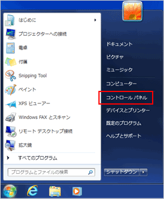
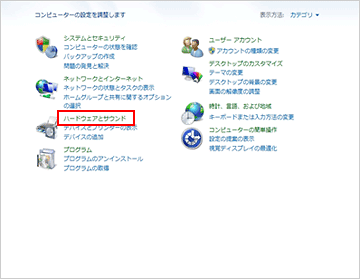
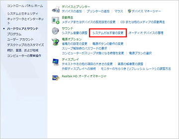
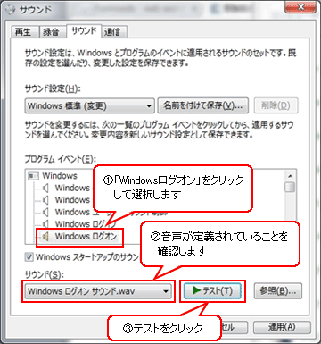

ご利用のパソコンにより手順が異なる場合がありますので、パソコンの説明書などをご参考ください。
ここではWindows7での確認手順をご案内します。
※Windows8では、デスクトップモードにて「設定」⇒「コントロールパネル」を実行してください。
※Windows10では、「 + X キーを押す」⇒「コントロールパネル」⇒「ハードウェアとサウンド 」⇒「サウンド」を実行してください。
（コントロールパネルを表示する時「表示方法」でカテゴリを選択してください。）

１. 【スタート】⇒【コントロールパネル】を選択してください。

２. 【コントロールパネル】のウィンドウが開いたら【ハードウェアとサウンド】をクリックしてください。

３. 【システムが出す音の変更】をクリックしてください。

４. 【サウンド】の設定画面（左図参照）が開いたら【サウンド】タブをクリックしてください。
【サウンド】タブが開いたら【Windowsログオン】をクリックして音声が定義されていることを確認します。
※Windows10をご利用の場合は【システムエラー】を選択してください。
【テスト】をクリックすると、定義されている音が再生されます。